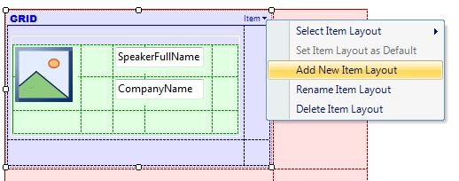
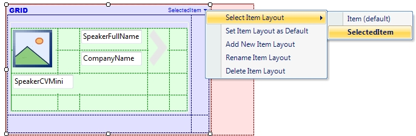
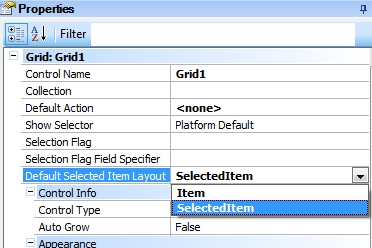

Indicates which layout of a Grid row must be displayed when it is tapped on, to show more or less information, and also to enable new actions only available when the row is selected. Scope Generators: Android, Apple Samples
Consider the EventDay application, where there is a WorkWithDevicesSpeakers object with a Grid in which all the event’s speakers are loaded. Suppose that after selecting a speaker from the grid –by tapping on it–, you want instead of calling the Detail, showing a brief biography of the speaker, and an arrow-shaped image to access further information on the speaker if desired.
To create a new layout on the Grid of the Speakers List level, you have to:



Additionally, to continue having access to the Detail level, create the following event on the arrow-shaped image of the SelectedItem layout:
Event Image1.Tap
WorkWithDevicesSpeaker.Speaker.Detail(SpeakerId)
EndEvent
Consideration: For the Default Selected Item Layout property to work, the Grid’s Default Layout must be different from the layout configured in that property. AvailabilityThis property is available since GeneXus X Evolution 3. See Also
EventDay KB |
| Backlinks | |||
| Default Selected Item Layout property | |||
| Deselect method | |||
| Grids with Selection By Code for Smart Devices | Multiple Layouts per Row | Select method | Selection Type property |